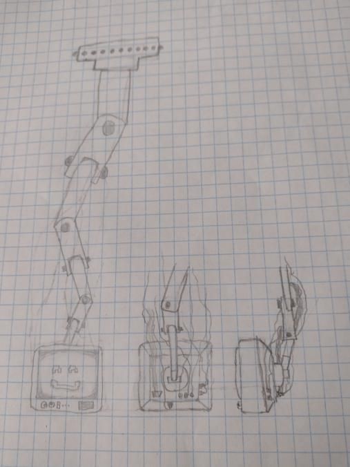
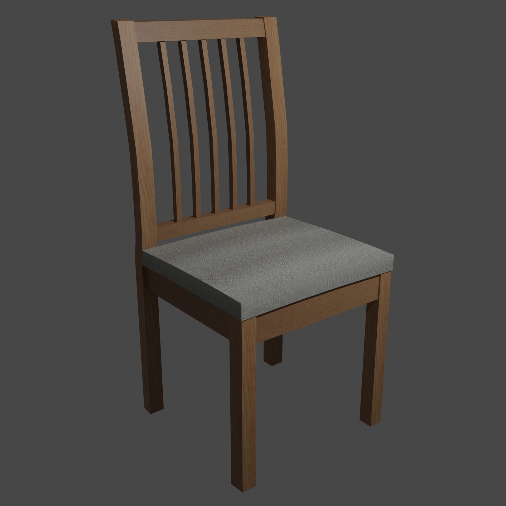

.png)
The Underground - Roblox
The Underground is a Roblox game I worked on from April 2021 up until August 2022. I made several models for it, many of which appear in-game. All of my 2021 models (excluding my second attempt at a glock) are documented in this video (warning: old and cringe). In 2022, I made 2 models for the game, shown below.
Sanitation Cart
Model finished April 17th, 2022. Based on the Rubbermaid sanitation cart. Features a sandwich based on the one from Team Fortress 2, soupcans, and paper towels.
AI
Model finished August 19th, 2022. Model is a CRT screen with a friendly face on it, mounted on a robot arm. I also drew concept art for the model.

I'd say it's the best drawing I've ever done, but I don't draw a lot so that's not exactly surprising.
General Models
2022 was sort of a slower year for me in terms of 3D art. I didn't really do a lot this year for a variety of reasons. But I did make a bit this year, and I'm pretty proud of some of it.
Cabinet Man
Important note: First off, go follow my friend Autumn. She did the amazing artwork for the arcade cabinet. It would not look nearly as good if it weren't for her.
Anyways, this model of an arcade cabinet is from September, and is loosely based off of the Lemon Demon song Cabinet Man.
There's a few other renders you can check out below, but I'm going to talk about this one real quick. Initially, I was going to make an animation for Cabinet Man.
This environment was intended to eventually become the "workshop" mentioned at the start of the song, but after seeing how long it took for it to render, I ended up abandoning the project. I may return when I upgrade my PC.
Other renders
first render
second render, I used colors from the cover artwork of Spirit Phone
third render, I asked Autumn if she could help design artwork for the arcade cabinet, and she did a great job.
Spamton G. Spamton
This was a model based off of Spamton from Deltarune. I'm pretty proud of this one, especially considering I'd tried and failed making Spamtons in the past.
Other renders
First render of the model
Second render of the model + I gave him chocolate milk and he has hair
Third render of the model, gives a full view of the body and also his legs are visible now.
One of two renders where I quickly threw together a little environment for him.
The other render
My first attempt at making his hair.
Gun
A gun I made as a birthday gift for the aforementioned Autumn. The gun is based off of the AMT AutoMag III. In practical application, it would probably be best for the model to be used as a decoration, as only the hammer and the trigger can move, and that's not even really intended. At some point, I'll have to try making a gun which is actually usable in a game or an animation.
Chairs
Not a lot to say. It's a chair. I think I did a pretty good job with it, but it's also pretty high poly, so I need to work on that. It's based on a banquet chair (apparently it's called the "Flash Furniture Hercules Series Trapezoidal Back Stacking Banquet Chair In Black").
Still not a lot to say. This is also a chair. I also think I did a pretty good job with it, and it's a lower poly count than the previous chair. It's based on an IKEA chair, the EKEDALEN (for context on why I chose that chair specifically, please refer to the Chair of Republic), and even uses images of that chair for the texture (because of that the cushion doesn't look great, but besides that I think it worked well).
Log Cabin
Probably my last piece of 3D art for 2022. Initially, I was going to end the year with a fully-animated Christmas special, but I lost motivation on that project very quickly. Instead, I decided to do a cute little winter log cabin. I was planning on giving it an interior, but by the end of the project the scene was so laggy I decided not to bother. Not an amazing way to end the year, but I think it looks alright. Maybe I'll try something similar after I upgrade my PC.
Conclusion
I hope that this showcase has at least somewhat convinced you that I may be vaguely competent at certain things, and that you might want to invite me to work on your project. At the moment, I've just worked on projects for my friends, and don't request pay, because I'm mostly just trying to learn how to have a job. If you'd like me to work on your project, I can be reached on Twitter or in my mostly-dead Discord server.